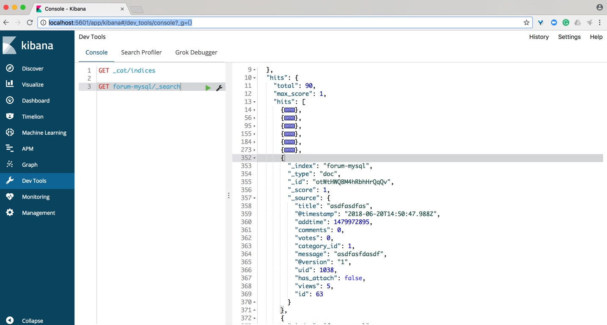

数据迁移
我们选择 Logstash 来进行数据的迁移，Logstash 是一个开源的 ETL 中间件工具，可以支持多种数据源，我们这里的数据源就是社区的 MySQL 数据库。这一节我来给大家介绍具体如何来操作。
首先，是 Logstash 的下载安装，打开网址：
https://www.elastic.co/downloads/logstash，选择 Zip 包下载，同样和 Elasticsearch 一样需要 Java 环境。

下载并解压 Logstash 到目录：/Users/medcl/Downloads/6.3.0/logstash-6.3.0
我们因为要使用 JDBC 来访问 MySQL 数据，所以我们还需要下载一个 MySQL 的 JDBC Connector，
根据这个页面：https://dev.mysql.com/doc/connector-j/5.1/en/connector-j-versions.html里面的 Connector 和 MySQL 的版本对照关系，
我们打开网址：https://downloads.mysql.com/archives/c-j/，选择产品版本 5.1.45，点击 zip 包下载链接即可开始下载。

解压 Connector 到目录：/Users/medcl/Downloads/mysql-connector-java-5.1.45，文件：mysql-connector-java-5.1.45-bin.jar 就是我们后面要给 Logstash 来使用的 JDBC 驱动，完整的路径就是：/Users/medcl/Downloads/mysql-connector-java-5.1.45/mysql-connector-java-5.1.45-bin.jar

接下来，开始使用 Logstash 来连接 MySQL 数据库，切换到 Logstash 所在目录：/Users/medcl/Downloads/6.3.0/logstash-6.3.0，我们在这个目录创建一个 Logstash 的配置文件：jdbc.conf，文件内容如下：
input {
jdbc {
jdbc_driver_library => "/Users/medcl/Downloads/mysql-connector-java-5.1.45/mysql-connector-java-5.1.45-bin.jar"
jdbc_driver_class => "Java::com.mysql.jdbc.Driver"
jdbc_connection_string => "jdbc:mysql://127.0.0.1:3306/qa_es"
jdbc_user => "root"
jdbc_password => "qeephp"
statement => "SELECT `aws_article`.`id`, `aws_article`.`uid`, `aws_article`.`title`, `aws_article`.`message`, `aws_article`.`comments`, `aws_article`.`views`, `aws_article`.`add_time` as addtime, `aws_article`.`has_attach`, `aws_article`.`votes`, `aws_article`.`category_id` FROM `qa_es`.`aws_article`"
jdbc_paging_enabled => "true"
jdbc_page_size => "50000"
}
}
filter {
}
output {
stdout {
codec => rubydebug
}
elasticsearch {
index => "forum-mysql"
}
}
执行命令，启动 Logstash，如下图：
➜ logstash-6.3.0 ./bin/logstash -f jdbc.conf
程序正常运行输出很多信息，且自动退出，如下图：

我们打开 Kibana 查看一下索引:

果然看到有数据导入到 forum-mysql 这个索引里面了，且看到 Total 显示共有 90 条记录，和 MySQL 里面的文章总数一致，再执行一下上一节测试用的搜索语句:

可以找到数据库里面的对应的文章记录，简直完美！
Tip 1，如果启动 Logstash 的时候遇到类似错误：
Error: Java::com.mysql.jdbc.Driver not loaded. Are you sure you've included the correct jdbc driver in :jdbc_driver_library?请尝试使用 JDK 8 来运行 Logstash。
Tip 2，Logstash 配置文件里面的statement 参数设置的 SQL 字符串末尾不要加上
;，否则会报错。Tip 3，如果执行一段时间遇到 Logstash 异常退出且出现以下信息：
[2019-01-29T09:27:52,900][ERROR][org.logstash.Logstash ] java.lang.IllegalStateException: Logstash stopped processing because of an error: (NoMethodError) undefined method `<' for nil:NilClass
[2019-01-29T09:45:02,377][FATAL][logstash.runner ] An unexpected error occurred! {:error=>#<NoMethodError: undefined method `<' for nil:NilClass>, :backtrace=>
都有可能是 Elasticsearch 服务器不可用造成的。
最后，我把测试数据都导出放在本书配套的资源了： 3.6_data_migration/forum-mysql-dump.json ，大家可以自行导入到本地的 Elasticsearch，执行相同的查询测试了。